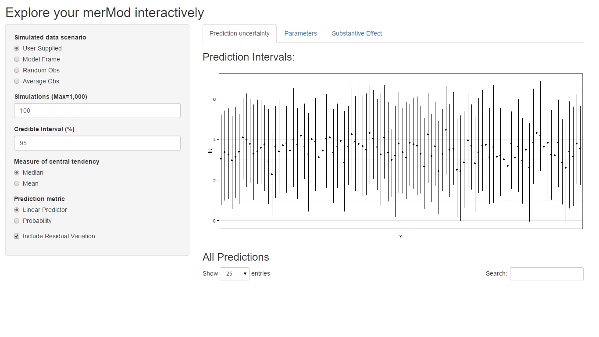
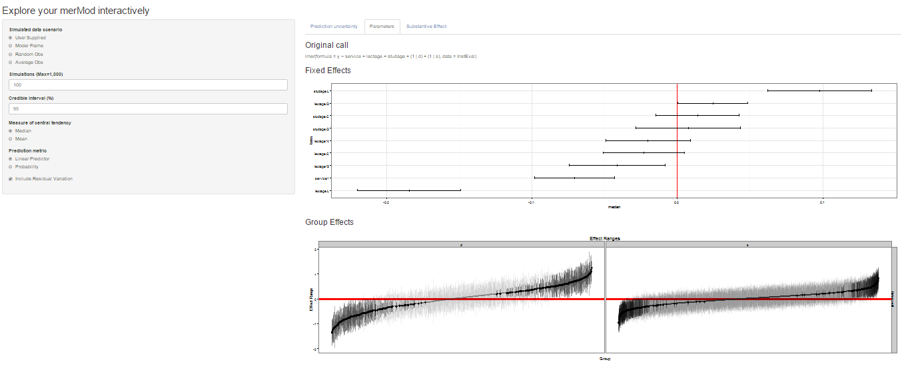
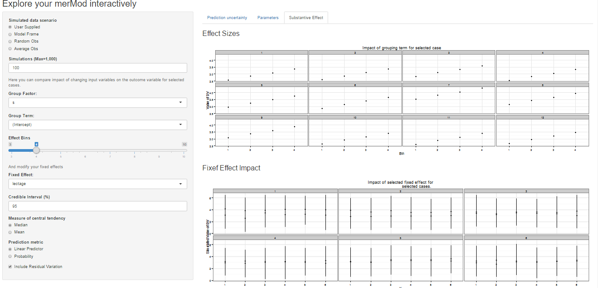
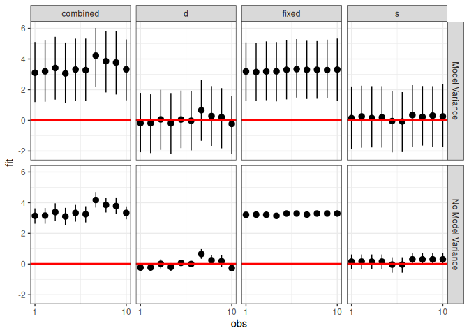
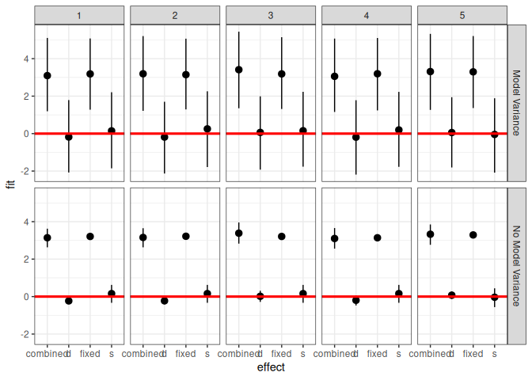
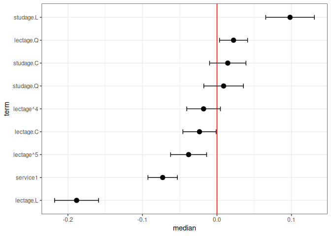
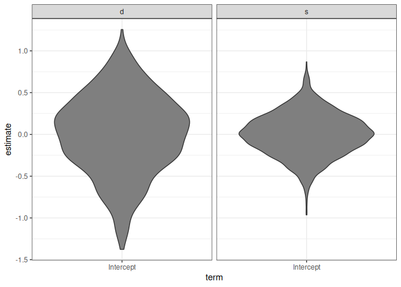
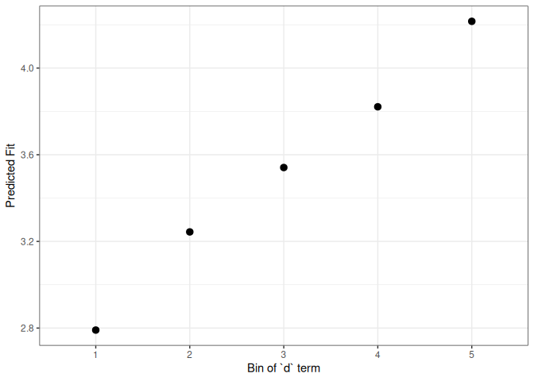
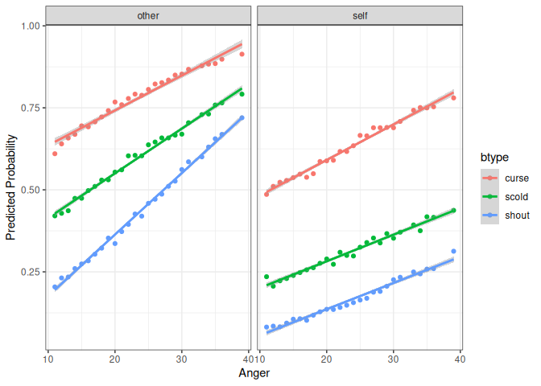
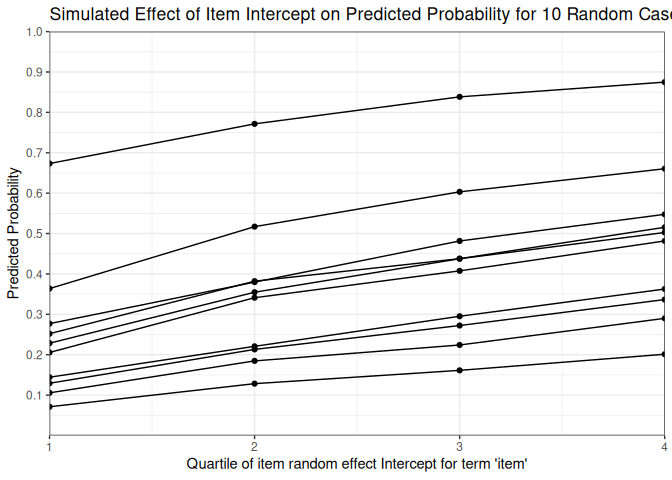

A package for getting the most out of large multilevel models in R
by Jared E. Knowles and Carl Frederick
Working with generalized linear mixed models (GLMM) and linear mixed models (LMM) has become increasingly easy with advances in the lme4 package. As we have found ourselves using these models more and more within our work, we, the authors, have developed a set of tools for simplifying and speeding up common tasks for interacting with merMod objects from lme4. This package provides those tools.
Installation
# development version
library(devtools)
install_github("jknowles/merTools")
# CRAN version
install.packages("merTools")merTools 0.6.4 (January 2026)
- Maintenance release to merge @DavisVaughan changes to accomodate upstream changes in
vctrspackage impactingdplyr::bind_rows()usage inREsim(#133)
merTools 0.6.3 (September 2025)
- Maintenance release to fix crossreference issues with function documentation
merTools 0.6.2 (Early 2024)
- Maintenance release to fix minor issues with function documentation
- Fix #130 by avoiding conflict with
vcovin themerDerivpackage - Upgrade package test infrastructure to 3e testthat specification
merTools 0.6.1 (Spring 2023)
- Maintenance release to keep package listed on CRAN
- Fix a small bug where parallel code path is run twice (#126)
- Update plotting functions to avoid deprecated
aes_string()calls (#127) - Fix (#115) in description
- Speed up PI using @bbolker pull request (#120)
- Updated package maintainer contact information
merTools 0.5.0
New Features
-
subBootnow works withglmerModobjects as well -
reMarginsa new function that allows the user to marginalize the prediction over breaks in the distribution of random effect distributions, see?reMarginsand the newreMarginsvignette (closes #73)
Bug fixes
- Fixed an issue where known convergence errors were issuing warnings and causing the test suite to not work
- Fixed an issue where models with a random slope, no intercept, and no fixed term were unable to be predicted (#101)
- Fixed an issue with shinyMer not working with substantive fixed effects (#93)
Shiny App and Demo
The easiest way to demo the features of this application is to use the bundled Shiny application which launches a number of the metrics here to aide in exploring the model. To do this:
library(merTools)
m1 <- lmer(y ~ service + lectage + studage + (1|d) + (1|s), data=InstEval)
shinyMer(m1, simData = InstEval[1:100, ]) # just try the first 100 rows of data
On the first tab, the function presents the prediction intervals for the data selected by user which are calculated using the predictInterval function within the package. This function calculates prediction intervals quickly by sampling from the simulated distribution of the fixed effect and random effect terms and combining these simulated estimates to produce a distribution of predictions for each observation. This allows prediction intervals to be generated from very large models where the use of bootMer would not be feasible computationally.

On the next tab the distribution of the fixed effect and group-level effects is depicted on confidence interval plots. These are useful for diagnostics and provide a way to inspect the relative magnitudes of various parameters. This tab makes use of four related functions in merTools: FEsim, plotFEsim, REsim and plotREsim which are available to be used on their own as well.

On the third tab are some convenient ways to show the influence or magnitude of effects by leveraging the power of predictInterval. For each case, up to 12, in the selected data type, the user can view the impact of changing either one of the fixed effect or one of the grouping level terms. Using the REimpact function, each case is simulated with the model’s prediction if all else was held equal, but the observation was moved through the distribution of the fixed effect or the random effect term. This is plotted on the scale of the dependent variable, which allows the user to compare the magnitude of effects across variables, and also between models on the same data.
Predicting
Standard prediction looks like so.
predict(m1, newdata = InstEval[1:10, ])
#> 1 2 3 4 5 6 7 8
#> 3.146337 3.165212 3.398499 3.114249 3.320686 3.252670 4.180897 3.845219
#> 9 10
#> 3.779337 3.331013With predictInterval we obtain predictions that are more like the standard objects produced by lm and glm:
predictInterval(m1, newdata = InstEval[1:10, ], n.sims = 500, level = 0.9,
stat = 'median')
#> fit upr lwr
#> 1 3.049932 5.093806 1.108858
#> 2 3.254383 5.240713 1.057130
#> 3 3.330465 5.296573 1.182437
#> 4 3.072420 5.062945 1.060303
#> 5 3.265261 5.341725 1.402322
#> 6 3.205231 5.294953 1.037656
#> 7 4.175940 6.282621 2.382380
#> 8 3.882463 5.685963 1.736587
#> 9 3.670267 5.513933 1.740940
#> 10 3.255794 5.310569 1.302201Note that predictInterval is slower because it is computing simulations. It can also return all of the simulated yhat values as an attribute to the predict object itself.
predictInterval uses the sim function from the arm package heavily to draw the distributions of the parameters of the model. It then combines these simulated values to create a distribution of the yhat for each observation.
Inspecting the Prediction Components
We can also explore the components of the prediction interval by asking predictInterval to return specific components of the prediction interval.
predictInterval(m1, newdata = InstEval[1:10, ], n.sims = 200, level = 0.9,
stat = 'median', which = "all")
#> effect fit upr lwr obs
#> 1 combined 3.170815531 4.897557 1.1168130 1
#> 2 combined 3.392252635 5.271580 1.4763000 2
#> 3 combined 3.312924053 5.283451 1.1918556 3
#> 4 combined 3.107214652 5.065260 0.9704722 4
#> 5 combined 3.390408377 5.114171 1.4017789 5
#> 6 combined 3.068184932 5.182124 1.1477593 6
#> 7 combined 4.237721893 6.305876 2.3212507 7
#> 8 combined 3.938977848 5.783264 1.9656571 8
#> 9 combined 3.609879762 5.571649 1.6188025 9
#> 10 combined 3.268306354 5.207711 1.5466107 10
#> 11 s 0.288196131 2.173597 -1.7965170 1
#> 12 s 0.234473262 2.165836 -1.9006961 2
#> 13 s 0.053449347 1.797811 -2.0578690 3
#> 14 s 0.153722367 2.281192 -1.8309533 4
#> 15 s -0.185868931 1.924826 -1.9254991 5
#> 16 s 0.005508028 1.993290 -1.9935044 6
#> 17 s 0.295415003 2.249571 -1.8060313 7
#> 18 s 0.185665004 2.337454 -1.8725630 8
#> 19 s 0.158074694 1.861189 -1.6134448 9
#> 20 s 0.540452139 2.492809 -1.6630648 10
#> 21 d -0.241810339 1.803760 -2.2014161 1
#> 22 d -0.106990086 1.524812 -1.9330870 2
#> 23 d 0.093676692 2.035065 -1.8738190 3
#> 24 d -0.062836407 1.861902 -2.1566703 4
#> 25 d 0.123169514 2.011202 -1.7826808 5
#> 26 d 0.158236405 1.971872 -2.1130417 6
#> 27 d 0.729460478 2.458162 -1.1680629 7
#> 28 d 0.349219092 2.198239 -1.7423378 8
#> 29 d 0.213772608 2.145613 -1.8319499 9
#> 30 d -0.134494379 1.599250 -1.9687639 10
#> 31 fixed 3.176243613 5.151683 1.2451309 1
#> 32 fixed 3.252064186 5.313245 1.0304711 2
#> 33 fixed 2.953745955 4.971552 1.1369649 3
#> 34 fixed 3.035285073 4.929414 1.5232306 4
#> 35 fixed 3.181923428 5.231064 1.5781641 5
#> 36 fixed 3.124599489 5.080456 1.4769472 6
#> 37 fixed 3.307581480 4.974664 1.1799446 7
#> 38 fixed 3.224109498 5.068238 1.5167393 8
#> 39 fixed 3.234614133 5.483387 1.1385223 9
#> 40 fixed 3.458594201 5.284987 1.1904595 10This can lead to some useful plotting:
library(ggplot2)
plotdf <- predictInterval(m1, newdata = InstEval[1:10, ], n.sims = 2000,
level = 0.9, stat = 'median', which = "all",
include.resid.var = FALSE)
plotdfb <- predictInterval(m1, newdata = InstEval[1:10, ], n.sims = 2000,
level = 0.9, stat = 'median', which = "all",
include.resid.var = TRUE)
plotdf <- dplyr::bind_rows(plotdf, plotdfb, .id = "residVar")
plotdf$residVar <- ifelse(plotdf$residVar == 1, "No Model Variance",
"Model Variance")
ggplot(plotdf, aes(x = obs, y = fit, ymin = lwr, ymax = upr)) +
geom_pointrange() +
geom_hline(yintercept = 0, color = I("red"), size = 1.1) +
scale_x_continuous(breaks = c(1, 10)) +
facet_grid(residVar~effect) + theme_bw()
#> Warning: Using `size` aesthetic for lines was deprecated in ggplot2 3.4.0.
#> ℹ Please use `linewidth` instead.
#> This warning is displayed once per session.
#> Call `lifecycle::last_lifecycle_warnings()` to see where this warning was
#> generated.
We can also investigate the makeup of the prediction for each observation.
ggplot(plotdf[plotdf$obs < 6,],
aes(x = effect, y = fit, ymin = lwr, ymax = upr)) +
geom_pointrange() +
geom_hline(yintercept = 0, color = I("red"), size = 1.1) +
facet_grid(residVar~obs) + theme_bw()
Plotting
merTools also provides functionality for inspecting merMod objects visually. The easiest are getting the posterior distributions of both fixed and random effect parameters.
feSims <- FEsim(m1, n.sims = 100)
head(feSims)
#> term mean median sd
#> 1 (Intercept) 3.22583602 3.22683477 0.02271160
#> 2 service1 -0.07370321 -0.07536360 0.01431838
#> 3 lectage.L -0.18584976 -0.18606828 0.01667151
#> 4 lectage.Q 0.02295866 0.02298680 0.01134072
#> 5 lectage.C -0.02556061 -0.02570727 0.01420844
#> 6 lectage^4 -0.01954183 -0.01976654 0.01336789And we can also plot this:

We can also quickly make caterpillar plots for the random-effect terms:
reSims <- REsim(m1, n.sims = 100)
#> Error in `list_flatten()`:
#> ! `x` must be a list, not a list matrix.
head(reSims)
#> Error in h(simpleError(msg, call)): error in evaluating the argument 'x' in selecting a method for function 'head': object 'reSims' not found
plotREsim(REsim(m1, n.sims = 100), stat = 'median', sd = TRUE)
#> Error in `list_flatten()`:
#> ! `x` must be a list, not a list matrix.Note that plotREsim highlights group levels that have a simulated distribution that does not overlap 0 – these appear darker. The lighter bars represent grouping levels that are not distinguishable from 0 in the data.
Sometimes the random effects can be hard to interpret and not all of them are meaningfully different from zero. To help with this merTools provides the expectedRank function, which provides the percentile ranks for the observed groups in the random effect distribution taking into account both the magnitude and uncertainty of the estimated effect for each group.
ranks <- expectedRank(m1, groupFctr = "d")
head(ranks)
#> groupFctr groupLevel term estimate std.error ER pctER
#> 2 d 1 Intercept 0.3944919 0.08665152 835.3005 74
#> 3 d 6 Intercept -0.4428949 0.03901988 239.5363 21
#> 4 d 7 Intercept 0.6562681 0.03717200 997.3569 88
#> 5 d 8 Intercept -0.6430680 0.02210017 138.3445 12
#> 6 d 12 Intercept 0.1902940 0.04024063 702.3410 62
#> 7 d 13 Intercept 0.2497464 0.03216255 750.0174 66A nice features expectedRank is that you can return the expected rank for all factors simultaneously and use them:
ranks <- expectedRank(m1)
head(ranks)
#> groupFctr groupLevel term estimate std.error ER pctER
#> 2 s 1 Intercept 0.16732800 0.08165665 1931.570 65
#> 3 s 2 Intercept -0.04409538 0.09234250 1368.160 46
#> 4 s 3 Intercept 0.30382219 0.05204082 2309.941 78
#> 5 s 4 Intercept 0.24756175 0.06641699 2151.828 72
#> 6 s 5 Intercept 0.05232329 0.08174130 1627.693 55
#> 7 s 6 Intercept 0.10191653 0.06648394 1772.548 60
ggplot(ranks, aes(x = term, y = estimate)) +
geom_violin(fill = "gray50") + facet_wrap(~groupFctr) +
theme_bw()
Effect Simulation
It can still be difficult to interpret the results of LMM and GLMM models, especially the relative influence of varying parameters on the predicted outcome. This is where the REimpact and the wiggle functions in merTools can be handy.
impSim <- REimpact(m1, InstEval[7, ], groupFctr = "d", breaks = 5,
n.sims = 300, level = 0.9)
#> Warning: executing %dopar% sequentially: no parallel backend registered
impSim
#> case bin AvgFit AvgFitSE nobs
#> 1 1 1 2.790761 3.187055e-04 193
#> 2 1 2 3.243784 6.745013e-05 240
#> 3 1 3 3.540938 5.617427e-05 254
#> 4 1 4 3.821280 6.276201e-05 265
#> 5 1 5 4.215707 1.892841e-04 176The result of REimpact shows the change in the yhat as the case we supplied to newdata is moved from the first to the fifth quintile in terms of the magnitude of the group factor coefficient. We can see here that the individual professor effect has a strong impact on the outcome variable. This can be shown graphically as well:
ggplot(impSim, aes(x = factor(bin), y = AvgFit, ymin = AvgFit - 1.96*AvgFitSE,
ymax = AvgFit + 1.96*AvgFitSE)) +
geom_pointrange() + theme_bw() + labs(x = "Bin of `d` term", y = "Predicted Fit")
Here the standard error is a bit different – it is the weighted standard error of the mean effect within the bin. It does not take into account the variability within the effects of each observation in the bin – accounting for this variation will be a future addition to merTools.
Explore Substantive Impacts
Another feature of merTools is the ability to easily generate hypothetical scenarios to explore the predicted outcomes of a merMod object and understand what the model is saying in terms of the outcome variable.
Let’s take the case where we want to explore the impact of a model with an interaction term between a category and a continuous predictor. First, we fit a model with interactions:
data(VerbAgg)
fmVA <- glmer(r2 ~ (Anger + Gender + btype + situ)^2 +
(1|id) + (1|item), family = binomial,
data = VerbAgg)
#> Warning in checkConv(attr(opt, "derivs"), opt$par, ctrl = control$checkConv, :
#> Model failed to converge with max|grad| = 0.0729926 (tol = 0.002, component 1)Now we prep the data using the draw function in merTools. Here we draw the average observation from the model frame. We then wiggle the data by expanding the dataframe to include the same observation repeated but with different values of the variable specified by the var parameter. Here, we expand the dataset to all values of btype, situ, and Anger subsequently.
# Select the average case
newData <- draw(fmVA, type = "average")
newData <- wiggle(newData, varlist = "btype",
valueslist = list(unique(VerbAgg$btype)))
newData <- wiggle(newData, var = "situ",
valueslist = list(unique(VerbAgg$situ)))
newData <- wiggle(newData, var = "Anger",
valueslist = list(unique(VerbAgg$Anger)))
head(newData, 10)
#> r2 Anger Gender btype situ id item
#> 1 N 20 F curse other 3 S3WantCurse
#> 2 N 20 F scold other 3 S3WantCurse
#> 3 N 20 F shout other 3 S3WantCurse
#> 4 N 20 F curse self 3 S3WantCurse
#> 5 N 20 F scold self 3 S3WantCurse
#> 6 N 20 F shout self 3 S3WantCurse
#> 7 N 11 F curse other 3 S3WantCurse
#> 8 N 11 F scold other 3 S3WantCurse
#> 9 N 11 F shout other 3 S3WantCurse
#> 10 N 11 F curse self 3 S3WantCurseThe next step is familiar – we simply pass this new dataset to predictInterval in order to generate predictions for these counterfactuals. Then we plot the predicted values against the continuous variable, Anger, and facet and group on the two categorical variables situ and btype respectively.
plotdf <- predictInterval(fmVA, newdata = newData, type = "probability",
stat = "median", n.sims = 1000)
plotdf <- cbind(plotdf, newData)
ggplot(plotdf, aes(y = fit, x = Anger, color = btype, group = btype)) +
geom_point() + geom_smooth(aes(color = btype), method = "lm") +
facet_wrap(~situ) + theme_bw() +
labs(y = "Predicted Probability")
#> `geom_smooth()` using formula = 'y ~ x'
Cross-version numeric regression checks (for contributors)
predictInterval() is stochastic, so the usual unit-test tolerances are not a reliable way to confirm that a refactor of the simulation internals has preserved numeric behavior for users who rely on a fixed seed. To address this, the package ships a standalone regression harness that pins a canonical set of inputs (LMM and GLMM models, various which, level, stat, ignore.fixed.terms, fix.intercept.variance, and single-row-newdata cases) and dumps predictInterval() output to an RDS bundle for two package versions so they can be diffed bit-for-bit.
The script lives at tests/comparisons/predictInterval-regression.R and is NOT part of R CMD check. It has two modes:
# Generate an output bundle for one package version
Rscript tests/comparisons/predictInterval-regression.R harness \
<pkg_path> <output.rds>
# Diff two bundles
Rscript tests/comparisons/predictInterval-regression.R diff \
<a.rds> <b.rds>Typical workflow — comparing the current checkout against origin/master:
git worktree add /tmp/mT-old origin/master
Rscript tests/comparisons/predictInterval-regression.R harness /tmp/mT-old /tmp/old.rds
Rscript tests/comparisons/predictInterval-regression.R harness . /tmp/new.rds
Rscript tests/comparisons/predictInterval-regression.R diff /tmp/old.rds /tmp/new.rds
git worktree remove /tmp/mT-oldThe diff output categorizes every case as IDENTICAL, numeric-equal (< 1e-6), or various drift tiers. Any LMM case showing more than numeric-equal indicates that the refactor changed behavior for a user-supplied seed and should be investigated before the change is merged. Known-intentional numeric differences (for example, the GLMM include.resid.var = TRUE binomial-residual simulation fix introduced in 0.9.0) will show up only in the two glmm_bin_with_resid_* cases.
Run this whenever touching R/merPredict.R, R/predictInterval_helpers.R, or the simulation helpers they call.
Marginalizing Random Effects
# get cases
case_idx <- sample(1:nrow(VerbAgg), 10)
mfx <- REmargins(fmVA, newdata = VerbAgg[case_idx,], breaks = 4, groupFctr = "item",
type = "probability")
ggplot(mfx, aes(y = fit_combined, x = breaks, group = case)) +
geom_point() + geom_line() +
theme_bw() +
scale_y_continuous(breaks = 1:10/10, limits = c(0, 1)) +
coord_cartesian(expand = FALSE) +
labs(x = "Quartile of item random effect Intercept for term 'item'",
y = "Predicted Probability",
title = "Simulated Effect of Item Intercept on Predicted Probability for 10 Random Cases")